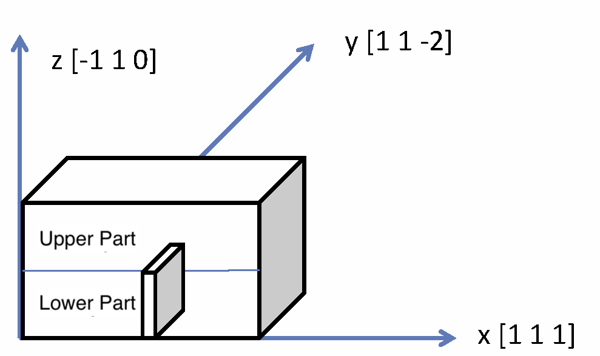

The primary objective of this whole course is to provide a tutorial on molecular dynamics using LAMMPS, so I don't devote significant space to the details of materials mechanics. However, it would be helpful to briefly cover the essential fundamentals of materials mechanics necessary for this lecture.
If you've never heard of the term "edge dislocation", I recommend studying materials mechanics beforehand using a textbook or similar resource. Covering this general topic in this course would be too much. If you're not particularly interested in structural materials science, you should terminate the course.
As done in previous lectures, we will proceed using iron crystals as our sample material. As you already know from previous lectures, iron crystals possess a body-centered cubic (BCC) lattice structure at low and room temperatures. The atomic configurations of any dislocations, including edge dislocations, depend on its base crystal. Therefore, this lecture focuses specifically on materials with a BCC structure. This means the methods introduced here can also be applied to the cases when you deal with the other BCC metals, such as vanadium, tungsten, molybdenum, and niobium.
The deformation of materials can be broadly categorized into two types. One is deformation that returns to its original shape when the external force ceases, known as elastic deformation. The other is deformation that does not return to its original state even after the external force ceases, and that retains the deformed state, known as plastic deformation. The latter is relevant to this lecture.
Most metals and ceramics possess crystalline structures, and their plastic deformation events can usually be modeled by the dynamics of linear lattice defects within the crystal, such as their generation, annihilation, and movement. These linear lattice defects are called dislocations. Therefore, studying dislocations is essentially synonymous with studying the plastic deformation of crystalline materials. Since dislocations can be experimentally observed by electron microscope, the process of a material's plastic deformation can also be experimentally observed to a certain extent.
Edge Dislocation
There are several types of dislocations, and the one we will study here is called an edge dislocation. In simple terms, it is a lattice defect where an extra plane is inserted into the base crystal. First, please look at the diagram below.

Fig. 1: Schematic Picture for Creating an Edge Dislocation
In Fig. 1, a rectangular material sample is placed in the orthorhombic system. Note that the orthorhombic systems here has the x, y, and z directions as [111], [11-2], and [-110], respectively; being slightly more complex than those used in previous lectures.
As mentioned above, dislocations are linear lattice defects, and their directions are determined by the base crystal structure. Notice that a thin plate stands at the bottom of the rectangular prism in the figure, and as can be seen from the figure, the direction perpendicular to the plate's face is [111]. Atoms are arranged periodically in this direction, and assume that one complete period is contained within this plate. Suppose we remove all the atoms contained within this plate and perform structural relaxation. The surfaces on the removed section would approach each other through the relaxation, restoring the bond. As a result, the upper part of the rectangular prism becomes to have an extra plane. At the boundary between the upper and lower parts, more precisely, at the top of the removed thin plate, crystal structure does not align properly. This misaligned region becomes a line in the y-direction, and this is called an edge dislocation.
Suppose we move the left wall of the thin plate to the right so that it aligns with the right wall. The displacement vector for this motion is (1/2)[111] if the lattice constant is taken as the unit of length. This vector, including its generalized notation (1/2)<111>, is called the Burgers vector of this dislocation. Furthermore, in this case, the direction of the dislocation is <11-2>, as can be seen from the figure. Although not covered in this lecture, when this dislocation undergoes translational motion within the z-plane (-110), that plane slides, i.e., undergoes plastic deformation. Therefore, to uniquely identify the dislocation, the slip plane information is sometimes included in the notation as (1/2)<111>{110}.
Execution of Script
The script bccFe_edge_relax.lcm in script directory implements the procedure for inserting edge dislocations into the iron crystal. To execute this in LAMMPS, type the following command at standard input:
$ lmp_serial -in script/bccFe_edge_relax.lcm
Load the dumped file bccFe_edge_relax.out into OVITO to verify the calculation succeeded. After loading the file, move the slider at the bottom left of the screen to the right to set it to the final step state. Then, perform Add modification steps in the same manner as the CNA analysis introduced in Radiation Damage. Detailed on-screen procedures are described in CNA of an edge dislocation using OVITO. If you are unsure, please refer to this document. If the procedure is correct, you'll see the dislocation as shown in the figure below.
Another analysis method is available. Clear all current Modifiers and select Dislocation Analysis (DXA) instead. Then, uncheck the second checkbox from the top labeled "Particles" and the third checkbox from the top labeled "Defect Mesh" in the "Visual elements" section of the Modifier panel. This should make the dislocation visible. Ensure that the "Input crystal type" at the bottom of the panel is set to BCC, in case the dislocation is not seen.
Highlighting "Dislocations" under "Visual elements" will display the Dislocation Display interface below. Select the bottom option, "Local character (screw/edge)." The dislocation should appear blue, confirming that the dislocation identified by DXA is an edge dislocation. While this example should be fine, if DXA becomes computationally heavy in the future, the CNA analysis above can provide a general overview.
Step-by-Step Analysis of Input Script
Creating a Base Iron Crystal
Here is the first three lines:
units metal
boundary p p p
atom_style atomic
These three lines always appear. They define units, boundary conditions, and the attributes for atomic information.
lattice bcc 2.83 orient x 1 1 1 orient y 1 1 -2 orient z -1 1 0
region box block 0 10 0 9 0 20 units lattice
create_box 1 box
create_atoms 1 box
Regarding the lattice command, note that the direction within the command is defined according to the x, y, and z directions shown in the figure above.
The following region command defines the box used for the simulation. Note that although it is labeled units lattice, the units are not lattice constants; instead, the unit along each direction corresponds to one period of the crystal.
The following two lines have appeared repeatedly, so no explanation should be necessary. This completes the creation of the BCC crystal in the rectangular prism shown in the figure above.
Creating Vacuum Layers at Top/Bottom Parts
The next block of script is:
region lower_vacuum block INF INF INF INF INF 1.9
delete_atoms region lower_vacuum
region upper_vacuum block INF INF INF INF 18.1 INF
delete_atoms region upper_vacuum
As appeared in the lecture on Shear Deformation, this script also involves creating a vacuum at the bottom and top of the z-direction to cancel the periodic boundary. The first region command defines the bottom region named lower_vacuum, and the subsequent delete_atoms command removes the atoms contained within that region. The following two lines perform the same procedure for the top region. I believe there is nothing particularly challenging here for those who already studied all the previous lectures.
Creating an Edge Dislocation
The next block of script is:
region edge_dis block 4.9 5.35 INF INF 0 9.8
delete_atoms region edge_dis
These two lines define the thin plate in the lower part of the rectangular prism shown in the schematic picture and remove all atoms belonging to that region. The reason for this operation has already been explained.
The final block of script is:
pair_style eam/fs
pair_coeff * * ./potentials/Fe_mm.eam.fs Fe
neigh_modify every 1 delay 0 check yes
dump 1 all custom 100 bcc_edge_relax.out mass type xs ys zs
reset_timestep 0
fix 1 all box/relax iso 0.0 vmax 0.001
thermo 100
thermo_style custom step pe lx ly lz pxx pyy pzz
min_style cg
minimize 1e-25 1e-12 50000 10000
The following section covers structural relaxation calculations to finally create an edge dislocation: defining the potential, specifying volume relaxation with fix ... box/relax command, designating the conjugate gradient method with min_style command, and finally executing the relaxation with minimize command. Since these concepts were all learnt in previous lectures, we won't repeat the details here. Audience unfamiliar with these commands are advised to return to Structural Relaxation.
That concludes this script. By combining this script with previous ones, such as the one for performing shear deformation, we can model the motion of dislocation under the plastic deformation of materials at the atomic level and establish a method for evaluating material properties like strength.